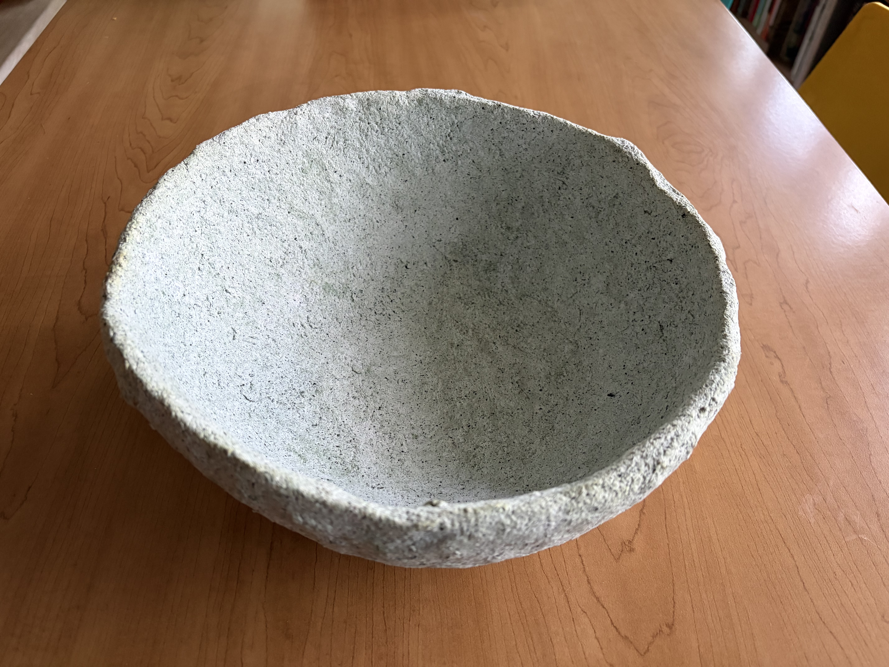
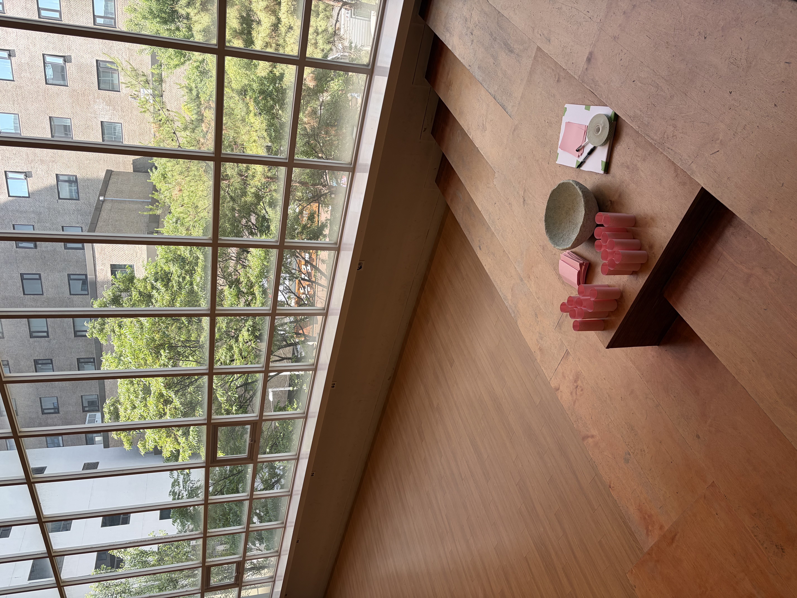
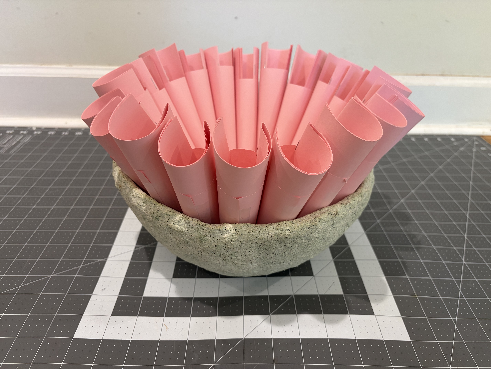
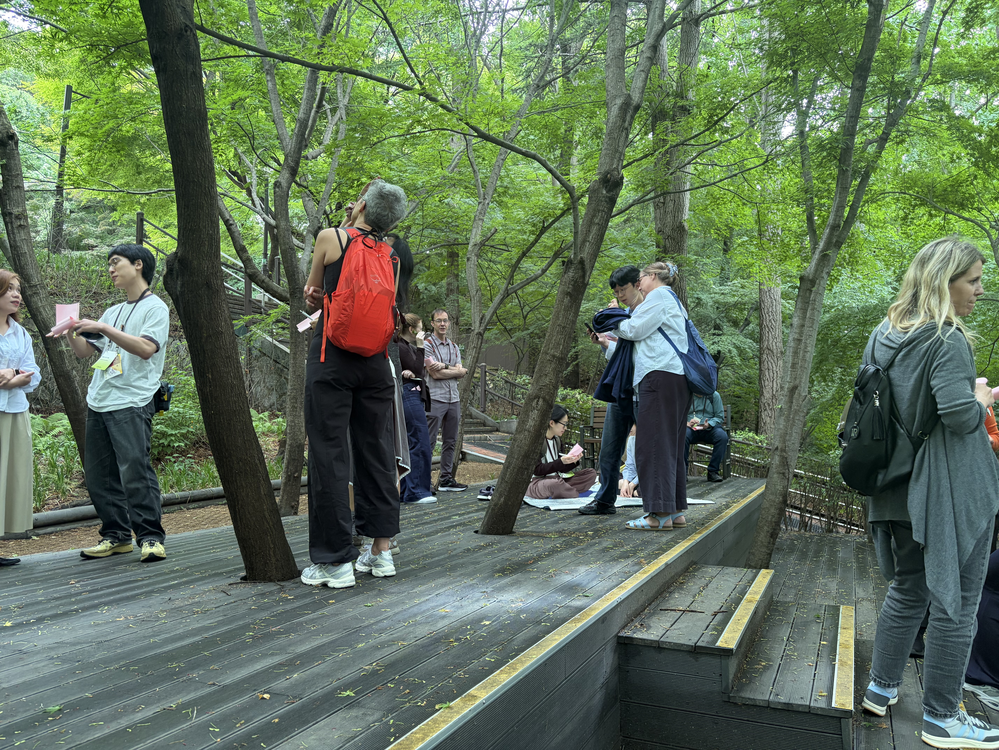
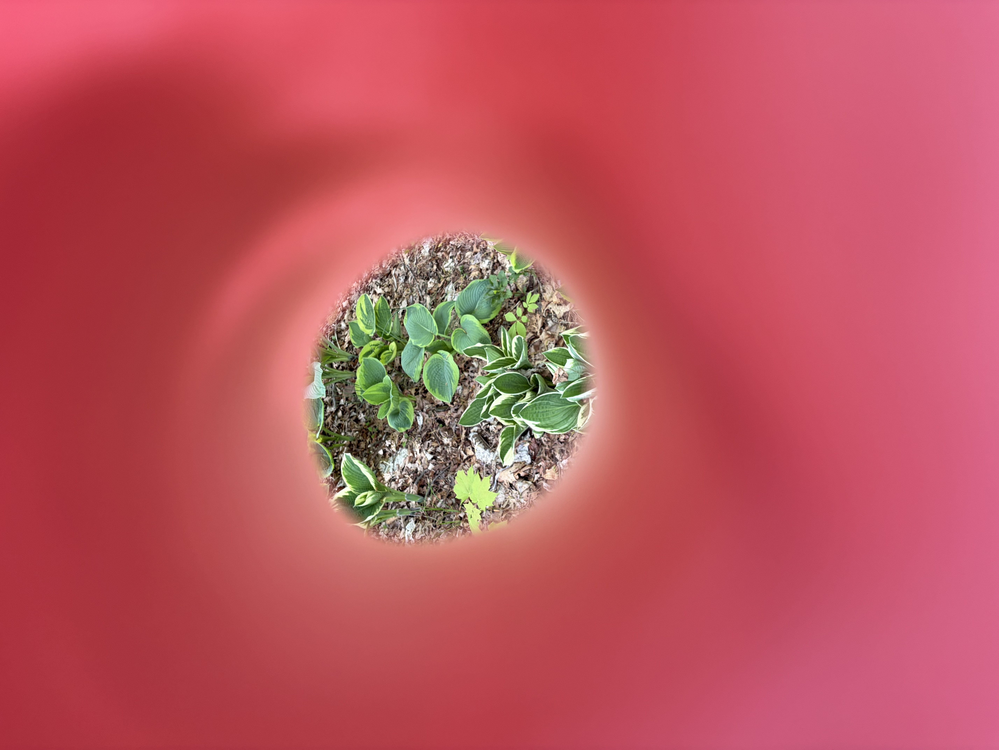
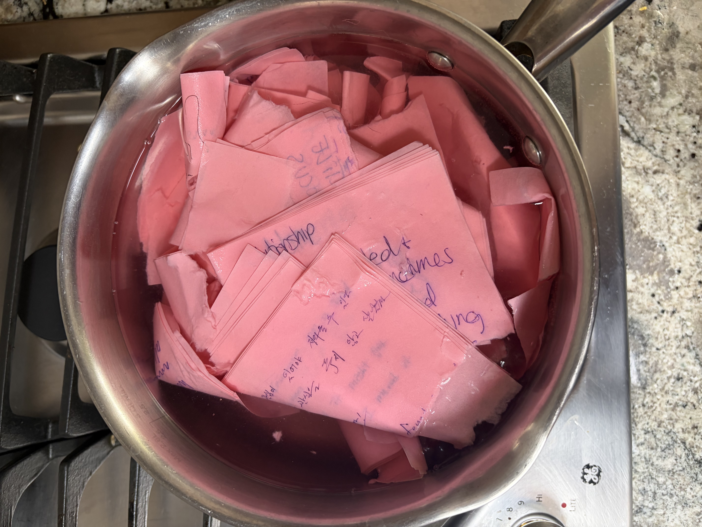
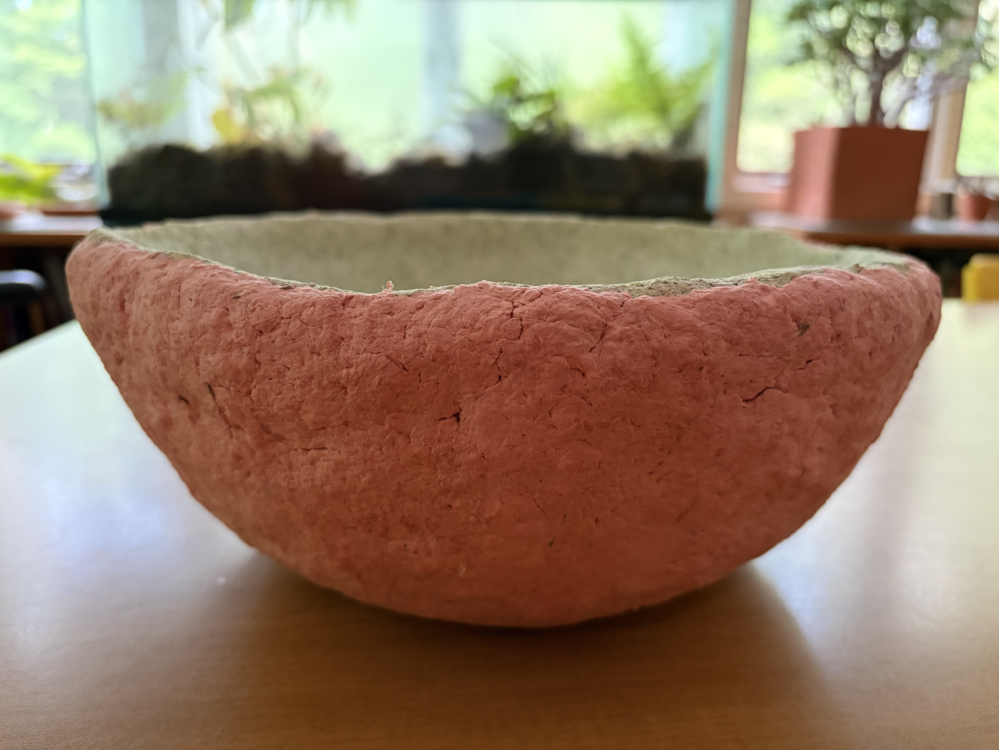

Hike and workshop, 2026 -
This concept was initially created for the Library Field, an open-air outdoor library laboratory just 45 minutes north of New York City in New Castle, NY - but it has become a traveling workshop that can be performed anywhere. The photos show a group of library workers from 10 different countries hiking Namsan Mountain in downtown Seoul, South Korea. The workshop proposes that “the Library” is already everywhere around us. In fact, the fundamentals of all of our institutions are already present before they are built - from governments to schools to restaurants to shopping malls. When we build new institutions, we draw from what already exists - and that makes it very important to be thoughtful observers of our environment.



After meeting and greeting one another, participants collect a small notebook and paper tube from a handmade paper pulp bowl and are asked to take notes in that notebook. This paper bowl is made from the boiled and formed notebooks of prior workshops: the core of it is made from field guide booklets from a first event at the Library Field in New York. After the introduction, everyone is given five prompts for a walk that we take together:
- name something
- describe the relationship between two things
- make an agreement with someone
- interrogate the unknown
- create your own prompt
The paper tube works like a viewfinder. A participant can use it to focus their vision, hearing, or sense of smell as they consider the prompts and take their notes. The walk concludes with a discussion, and then I collect the notebooks.



After the conclusion of the workshop, I digitize everyone’s notes and make them available as a flipbook, but I also boil them down and turn them into paper pulp. That paper pulp is added as another new layer to the pulp bowl everyone originally retrieved the notebook from. Every time I do this workshop, we add another layer to the bowl creating arboreal rings that document our time together. We can collect data, organize it, save it, and review it - but our collective experience will be archived as a layer that is better accessed through aesthetic inquiry.
